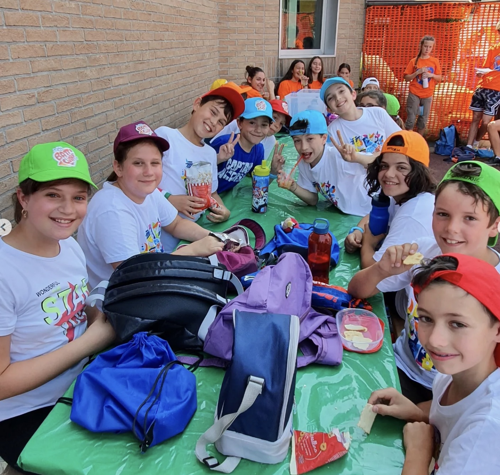
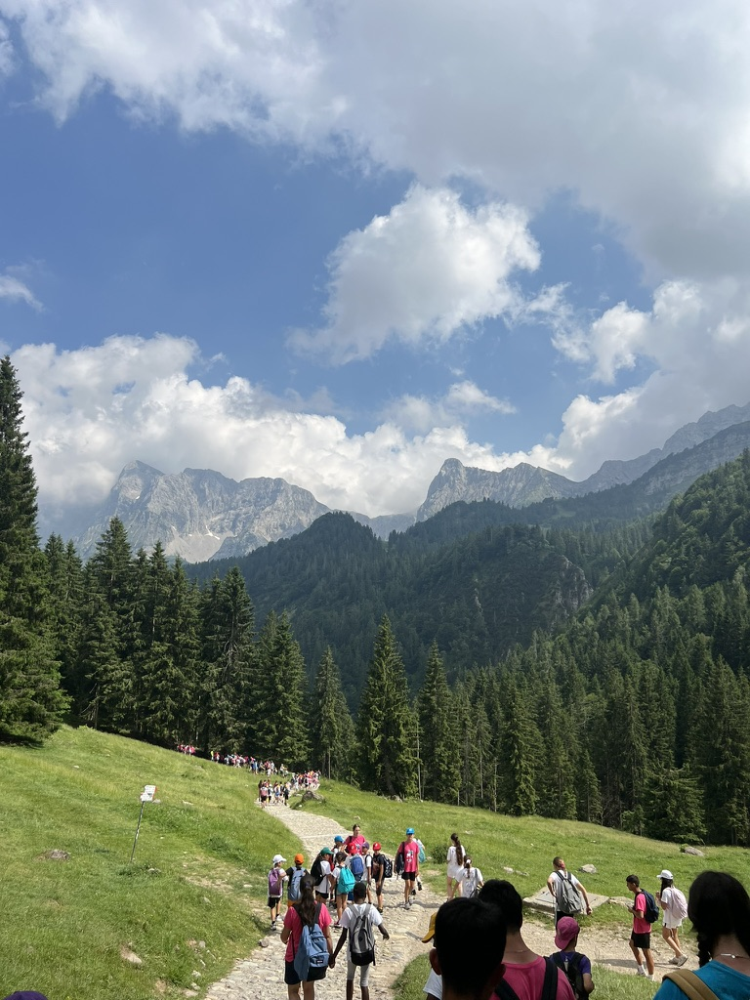
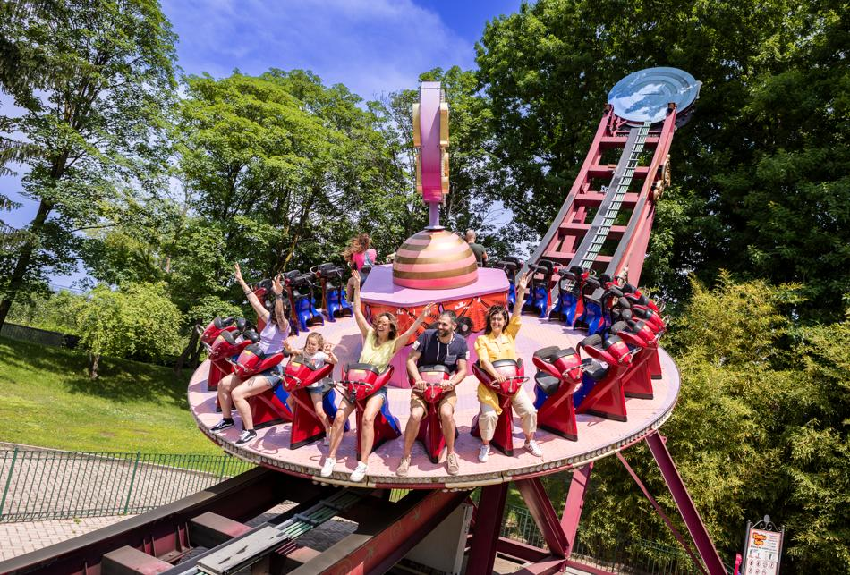
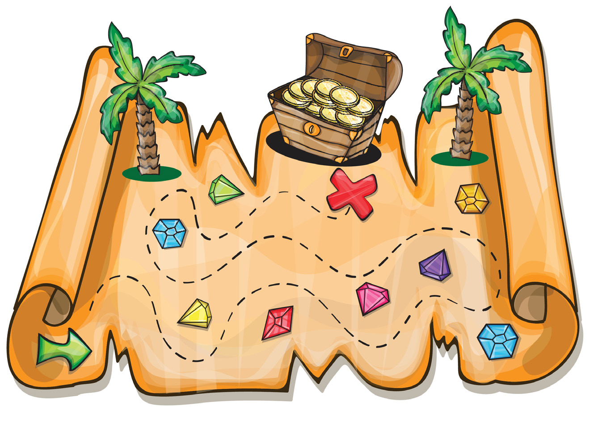

L'inizio dell'avventura
La prima settimana è stata dedicata all'accoglienza e alla creazione del gruppo. Tra laboratori creativi e tornei sportivi, ho imparato a gestire le prime dinamiche relazionali tra i bambini, diventando per loro un punto di riferimento sicuro e incoraggiante.


Respiro e Fatica
Al Rifugio Alpe Corte la sfida è stata fisica e organizzativa. Guidare un gruppo lungo i sentieri richiede attenzione costante e capacità di motivare chi è in difficoltà. La montagna mi ha insegnato il valore del passo condiviso e della sicurezza.
Divertimento Responsabile
La gita a Leolandia è stata una lezione di pazienza. In un contesto affollato e caotico, mantenere la coesione del gruppo garantendo al contempo il divertimento di ogni bambino è stata una prova di responsabilità non indifferente.


Il Grande Finale
Abbiamo concluso con una caccia al tesoro tra le vie del paese. È stato il momento culminante per testare lo spirito di squadra. Vedere i bambini collaborare per risolvere gli enigmi è stata la soddisfazione più grande di questo percorso.